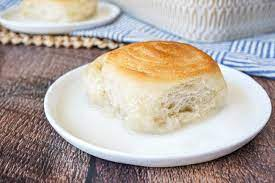

Pani Popo

This is a kind of like a dessert or sweet bread that comes from Samoa.It's soft, yeast-based rolles arraged in a deep baking dish, covered
with a sweetened coconut sause, and baked in a oven until the tops of the buns are golden and the coconut is bubbly. This dish is lovly as is but
if you want to make it even better a common combination to have with this is Koko Samoa.
Ingredients
- 2 1/4 tsp active dry yeast
- 1 - 1 1/4 cups like warm water
- 3 cups all-purpose flour
- 1/4 cup granualted sugar
- 1 tsp salt
- 3 tbsp unsalted butter(softened at room temp)
Coconut Sauce
- 1 cup cocnut milk
- 1 cup water
- 1/2 cup granulated sugar
Steps
- In a small bowl, sprinkle yeast over 1 cup ( 237 milliliters) of the lukewarm water and stir together. Allow to sit until frothy, about 10 minutes.
- In the bowl of a stand mixer fitted with a dough hook or a large bowl, combine the flour, sugar, and salt.
- Mix in the softened butter, then the frothy yeast with water until a soft dough comes together. If too crumbly, add up to 1/4 cup (60 milliliters) more water. If too sticky, add just enough flour to handle.
- On a lightly floured surface, knead the dough just until smooth and elastic. Place in lightly greased large bowl, turning to coat. Cover and let rise at room temperature until doubled in size, about 2 hours.
- Grease a 9×13 inch (23×33 centimeter) deep baking dish with butter.
- Place dough on lightly floured surface. Roll the dough into a long rectangle, then roll up long side to long side to create a spiral.
- Cut the dough into 12 equal spiraled rolls. Arrange the rolls in a single layer in the prepared baking dish. Cover and let rise until doubled, about 30 minutes.
- Preheat oven to 400˚F (200˚C).
- In a small bowl, whisk together the coconut milk, water, and sugar until well combined.
- Pour the coconut sauce evenly over the tops of the buns and bake in preheated oven until golden brown and coconut sauce is bubbling, 25-30 minutes.
- Remove the pan from the oven and cover with a piece of foil. Allow to cool covered in the pan for 30 minutes-1 hour before serving.